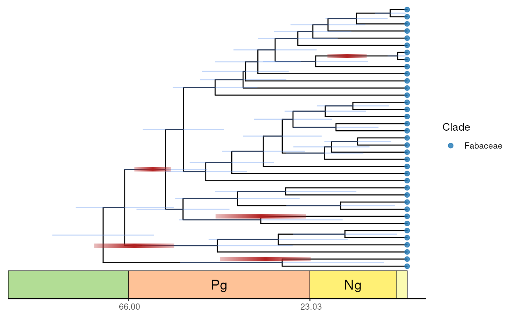

add_wgd_rects.RdAdd rectangles indicating WGD events in a phylogenetic tree
add_wgd_rects(p, tree, wgd_dates, rh = 0.25, highlight = NULL, method = "mrca")A `ggtree/ggplot` object containing a phylogenetic tree visualization.
A `phylo` object with the species tree used to create the plot in p.
Data frame with WGD date information.
Numeric indicating the height of the rectangles representing WGD events. Default: 0.15.
A character vector with IDs of WGD events to highlight.
Character indicating which method to use to position WGDs. One of 'mrca' (using MRCA of all species in variable full_species) or 'consensus_mean' (using consensus mean only). Default: 'mrca'.
A `ggtree` object.
data(tree)
data(species_metadata)
data(wgd_dates)
keep <- species_metadata[species_metadata$family == "Fabaceae", "latin_name"]
ftree <- tidytree::keep.tip(tree, keep)
#> ℹ invalid tbl_tree object. Missing column: parent.
#> ℹ invalid tbl_tree object. Missing column: parent.
#> ℹ invalid tbl_tree object. Missing column: parent.
#> ℹ invalid tbl_tree object. Missing column: parent.
#> ! # Invaild edge matrix for <phylo>. A <tbl_df> is returned.
p <- plot_timetree_rectangular(ftree, species_metadata)
add_wgd_rects(p, ftree, wgd_dates, rh = 0.3)
#> ! # Invaild edge matrix for <phylo>. A <tbl_df> is returned.
#> ! # Invaild edge matrix for <phylo>. A <tbl_df> is returned.
#> Warning: The following aesthetics were dropped during statistical transformation:
#> center, lower, and upper.
#> ℹ This can happen when ggplot fails to infer the correct grouping structure in
#> the data.
#> ℹ Did you forget to specify a `group` aesthetic or to convert a numerical
#> variable into a factor?
